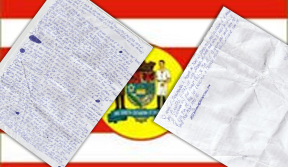

Return
1st letter to Blumenauans

CHAPTER 1
- Hi! I understand that it is impolite to read the letter which is for others, but this letter is for you, who found it out there after I threw it.
- I hope these words are very useful to you!
- Sorry if I disturbed your rush, but my intention is to build you.
- In ancient times, people had more time and did more things, and lived for more years, but in modern times people run a lot, feel that they have not produced enough and that time is lacking in every day.
- Nowadays people have great infrastructure and medical care, but in contrast the lifestyle and industrialized foods (snacks, fast food, etc.) have reduced people's life expectancy, while "fit" foods are more expensive and considered, perhaps, by the majority as having a lower flavor.
- But speaking in ancient times: people were more dedicated to reading a letter they found.
- They read with humility, attention, interest, etc.
- I ask that you be like this when reading this letter.
- When reading, you may think, "crazy!", "Another one of those", "tongue", "liar", but read it with much love.
CHAPTER 2
- Love and faith are gratuitous, and are the greatest things that exist in the Universe.
- Love is the greatest gift of beings, and faith is the greatest mover on earth.
- What about wisdom? Proverbs 4: 7: "Wisdom is the chief thing: get wisdom, use all that you possess in gaining understanding."
- And if all you have is faith?
- It is in faith that you can acquire wisdom.
- James 1: 5: "And if any of you lacks wisdom, let him ask of God, who giveth to all men liberally, and casteth him not, and it shall be given him."
- If wisdom is the main thing, do I mistake in saying that faith is the greatest mover?
- No, for with faith one acquires the chief thing called Wisdom, so faith is also chief, all of these being important in their functions, as members of a body.
- 1 Corinthians 11:11: "Neither is a man without the woman, nor the woman without the man, in the Lord."
- 1 Corinthians 11:12: "For as the woman is of the man, so also the man is of the woman: but all things are of God."
- 1 Corinthians 12: 20-21: "Therefore there are many members, but one body: and the eye can not say by the hand, I have no need of thee, neither yet head to my feet: I have no need of you ".
- Thinking of a weaker member, and if that is your faith?
- If your faith is small? Matthew 17:20: "And Jesus saith unto them, Because of your low faith: for verily I say unto you, If ye have faith as a grain of mustard seed, ye shall say unto this mountain: pass over thither, and pass over; nothing will be impossible for you. "
- Do not read this with debauchery, for obviously even though your faith is a giant, you can not move a hill, for it is not God's will.
- 1 John 5:14, "And this is the confidence which we have in him, that if we ask anything according to his will, he heareth us."
- What if you ask for something that is not God's will? James 4: 3: "Ye ask, and receive not, because ye ask evilly, that ye may spend it in your pleasures."
- Did you ask for a good thing and not receive it? Do not think that you asked badly, nor give up; insist, for in the time of God he does for you.
- Jesus said in Luke 18: 7, "Shall not God execute judgment upon his elect, who cry unto him day and night, though he tarry with them?"
- Read Matthew 17:20 again in this same letter.
- Is your faith small, the size of a mustard seed? Matthew 13: 31-32: "And he spake another parable unto them, saying, The kingdom of heaven is like unto the grain of mustard seed, which a man hath taken in him, sowing in his field: which is the least of all the seeds; but it is the greatest of plants, and a tree is made, so that the birds of the air come and nest in their branches. "
- For if your faith is small, but you have faith!
- And your faith can be exercised to grow much more, even in faith you may ask for more faith.
- mssdaniellmesquita